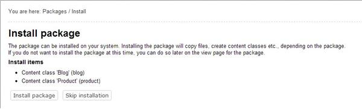
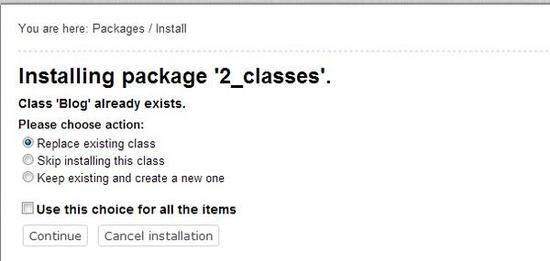
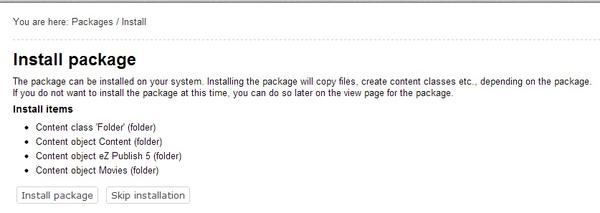

Installing packages
It is possible to install packages that are located under internal repositories. Note that this is not true for site packages and design packages. When you install a package, the system will create content classes and content objects, apply configuration settings and so on. Please note that from eZ Publish 3.8, information about installed packages is stored in the "ezpackage" table within the database.
The following sub-sections explain how to install packages of different types.
Content class packages
The following example demonstrates how to install a content class package.
Go to "Setup - Packages" in your administration interface, select the internal repository containing the package you wish to install and click the "Change repository" button. Find the desired package and click on its name.

Choosing a Package
The system will display the package summary as shown in the following screenshot.
Click the "Install" button.
The system starts by showing a list of items that will be created during the package installation (look at the next screenshot). Read this information carefully and click the "Install package" button to continue. Use the "Skip installation" button to abort the operation.

List of Items to be Installed
If some of the classes being installed already exist, the system will ask the user how this installation conflict should be handled (as shown in the screenshot below).

Installation Conflicts
If you wish to replace the existing class with the new one, note that all the content objects of the existing class will be removed as well. Use this option only if you know what you're doing. The remaining options make it possible to skip installing the class or create a new one (in both cases, the existing class and its objects will stay untouched).
After clicking the "Continue" button, the system will install the package and display a summary.
Content object packages
The following example demonstrates how to install a content object package. (Since handling the class installation conflicts is already described in the previous sub-section, let's suppose that no class definitions are included in the package that is being installed.)
Go to "Setup - Packages" in your administration interface, select the internal repository containing the package you wish to install and click the "Change repository" button.
Find the package you wish to install, click on its name, then click the "Install" button.
The system will display a list of items that will be created during the package installation (look at the next screenshot).

List of Items to be Installed
Read this information carefully click the "Install package" button. Use the "Skip installation" to abort the operation.
If the package contains not only actual content objects but also templates related to these objects, the system will ask which siteaccess these templates should be added to (look at the next screenshot).
Make your choice and click the "Next" button.
The next dialog reveals where the installed objects will be located and allow to choose another location if needed.
Choose the desired location and click the "Next" button.
If some of the objects being installed already exist (i.e. there is another object with the same
remote_id), the system will ask how this installation conflict should be handled. After clicking on the "Next" button, the system will install the package and display a summary.
Extension packages
The following example demonstrates how to install an extension package.
Go to "Setup - Packages" in your administration interface, select the internal repository containing the package you wish to install and click the "Change repository" button. Find the package you wish to install, click on its name and then click the "Install" button.
The system will show a list of items that will be created during the package installation.
If some of the items being installed already exist, the system will ask how this installation conflict should be handled as shown in the screenshot below.
After clicking the "Continue" button, the system will install the package and display a summary.
Powered by eZ Publish™ CMS Open Source Web Content Management. Copyright © 1999-2013 eZ Systems AS (except where otherwise noted). All rights reserved.